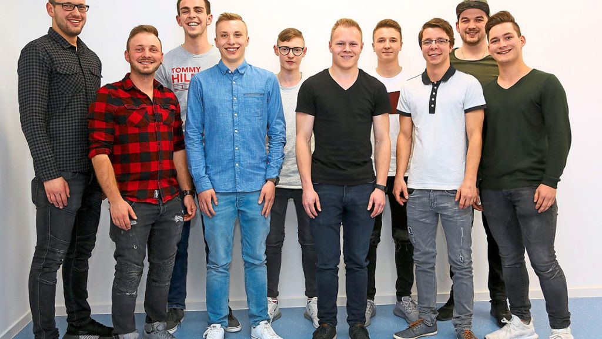
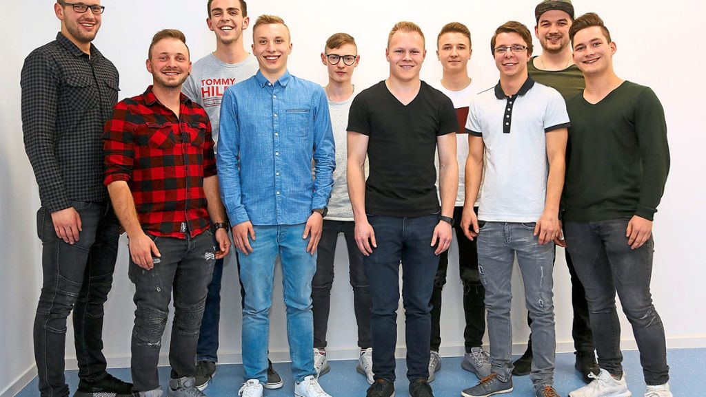
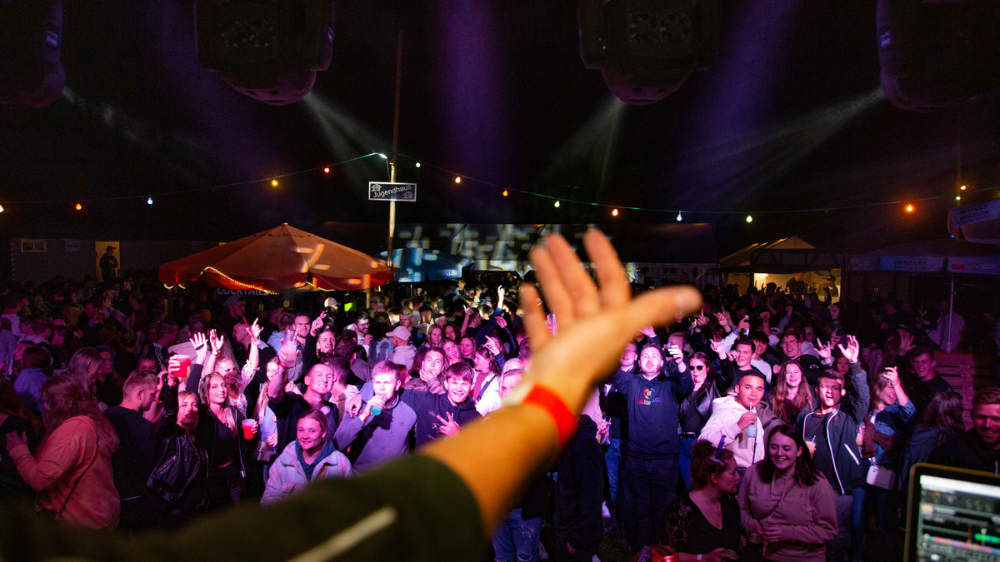
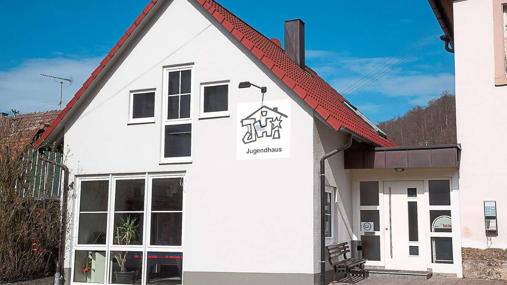

Vorstand
Unsere Vorstandschaft!
Unter einer Kinder- und Jugendfreizeiteinrichtung versteht man eine Einrichtung der offenen Kinder- und Jugendarbeit. Oft werden derartige Einrichtungen auch als Jugendhaus, Jugendzentrum (JZ, JUZ, JUZE), Jugendcafé, Jugendtreff, Jugendklub, Jugendfreizeitstätte, Jugendfreizeitheim (JFH), Kinderfreizeitheim oder ähnlich bezeichnet. Auch manche Schülerläden sind Einrichtungen der offenen Kinder- und Jugendarbeit. Als Häuser der offenen Tür (HoT) bieten sie Kindern und Jugendlichen niederschwellige Angebote und Programme. Oft spezialisieren sich einzelne Einrichtungen auf bestimmte Alters- und Zielgruppen (z. B. Jugendliche, Lückekinder, Mädchen, …) und drücken dies nicht selten in ihrer Eigenbezeichnung aus. Entsprechend werden die Angebote der jeweiligen Einrichtung gestaltet.
Vorstand
Unsere Vorstandschaft!
Karibische Nacht
Ein mal im Jahr findet unsere Karibische statt.
Jugendhaus
Hier unser Jugendhaus.